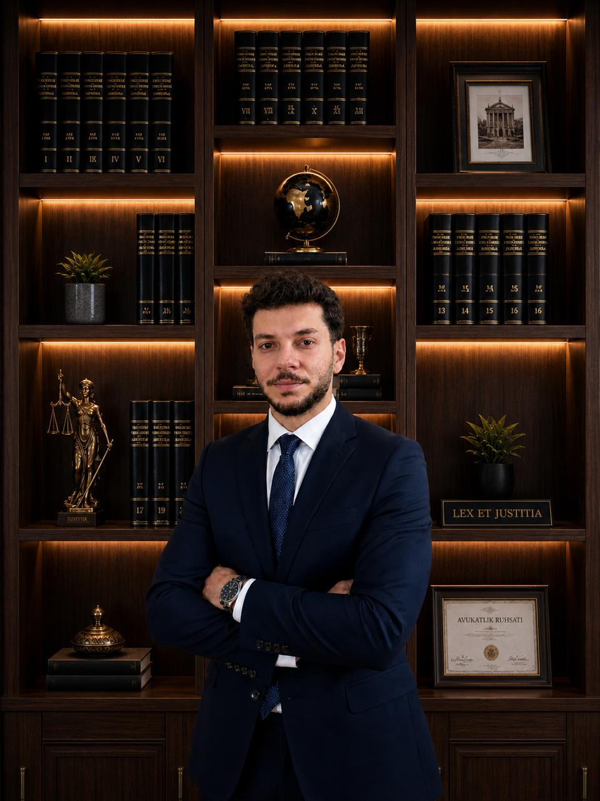

"Adalet, karanlıkta parlayan bir yıldız gibidir."
Hukuk & Danışmanlık · Erzurum
Hakkımızda
Atalay Hukuk & Danışmanlık, Av. Hasan Polatkan Atalay tarafından kurulmuş olup müvekkillerine ülke genelinde yüksek standartlarda avukatlık ve hukuki danışmanlık hizmeti sunmaktadır.
Güvenilir, şeffaf ve çözüm odaklı bir yaklaşımı benimseyen büromuz; başta ceza hukuku, aile hukuku, iş hukuku, icra ve iflas hukuku, sigorta hukuku, idare hukuku, vergi hukuku ve ticaret hukuku olmak üzere geniş bir alanda faaliyet göstermektedir.
Sahip olduğumuz bilgi birikimi ve tecrübeyle, bireysel ve kurumsal müvekkillerimizin ihtiyaçlarına özel, net ve sonuç odaklı çözümler üretmekteyiz.

Av. Hasan Polatkan Atalay
Uzmanlık Alanları
Atalay Hukuk & Danışmanlık olarak, müvekkillerimizin haklarını en iyi şekilde korumak için geniş bir hukuk alanında profesyonel hizmet sunmaktayız.
Soruşturma ve kovuşturma süreçlerinin her aşamasında kapsamlı hukuki destek.
Ceza hukuku, bireylerin temel hak ve özgürlüklerini doğrudan etkileyen en kritik hukuk alanlarından biridir. Bu kapsamda, soruşturma ve kovuşturma süreçlerinin her aşamasında müvekkillerimize kapsamlı hukuki destek sunulmaktadır.
Soruşturma aşamasında ifade alma, gözaltı ve tutuklama süreçleri titizlikle takip edilmekte; müvekkillerin hak kaybına uğramaması için gerekli tüm hukuki girişimler zamanında yapılmaktadır.
Kovuşturma aşamasında ise ağır ceza ve asliye ceza mahkemelerinde yürütülen davalarda etkin savunma stratejileri oluşturulmakta ve uygulanmaktadır.
Ceza yargılamasının teknik ve hassas yapısı göz önünde bulundurularak, delil değerlendirmesi, itiraz süreçleri ve kanun yolları profesyonel bir disiplinle yürütülmektedir. Amaç, müvekkillerin adil yargılanma hakkının korunması ve en doğru sonucun elde edilmesidir.
Hassasiyet ve özenle yürütülen aile hukuku süreçleri.
Aile hukuku, yalnızca hukuki değil aynı zamanda sosyal yönü de güçlü olan bir alandır. Bu nedenle yürütülen süreçlerde hukuki bilginin yanında hassasiyet ve özen büyük önem taşımaktadır.
Boşanma davaları (çekişmeli ve anlaşmalı), velayet, nafaka, mal paylaşımı ve aile içi uyuşmazlıklara ilişkin süreçler müvekkil odaklı bir yaklaşımla ele alınmaktadır. Her dosya, tarafların özel durumu dikkate alınarak değerlendirilmekte ve en uygun çözüm yolu belirlenmektedir.
Süreç boyunca müvekkillerin hem hukuki hem de kişisel haklarının korunması hedeflenmekte; gereksiz yıpranmaların önüne geçilmesi adına etkin ve dengeli bir strateji izlenmektedir.
İşçi ve işveren arasındaki tüm hukuki ilişkilerin titizlikle yönetimi.
İş hukuku, çalışma hayatının düzenlenmesi ve taraflar arasındaki dengenin korunması açısından büyük önem taşır. Bu kapsamda işçi ve işveren arasındaki tüm hukuki ilişkiler detaylı şekilde ele alınmaktadır.
İşe iade davaları, kıdem ve ihbar tazminatları, fazla mesai ve diğer işçilik alacakları ile iş kazaları ve meslek hastalıklarından doğan uyuşmazlıklar titizlikle takip edilmektedir. Ayrıca sosyal güvenlik hukukuna ilişkin ihtilaflarda da müvekkillere hukuki destek sunulmaktadır.
Her süreçte, mevzuat ve güncel yargı kararları ışığında hareket edilerek müvekkillerin haklarının en etkin şekilde korunması amaçlanmaktadır.
Alacakların tahsili ve borç ilişkilerinin hukuki güvencesi.
İcra ve iflas hukuku, alacakların tahsili ve borç ilişkilerinin hukuki güvence altına alınması açısından önemli bir alandır. Bu kapsamda icra takipleri ve iflas süreçleri planlı ve sistematik bir şekilde yürütülmektedir.
İlamsız ve ilamlı icra takipleri, borca itiraz ve itirazın kaldırılması davaları, haciz işlemleri ve iflas prosedürleri müvekkil menfaatleri doğrultusunda titizlikle takip edilmektedir.
Süreçlerin hızlı ve etkin şekilde sonuçlandırılması, gereksiz zaman kayıplarının önlenmesi ve alacakların en kısa sürede tahsil edilmesi temel hedefler arasında yer almaktadır.
Sigorta şirketleriyle yaşanan uyuşmazlıklarda profesyonel temsil.
Sigorta hukuku, bireylerin ve kurumların uğradıkları zararların giderilmesi açısından kritik bir rol oynamaktadır. Bu kapsamda sigorta şirketleri ile yaşanan uyuşmazlıklar detaylı şekilde analiz edilerek hukuki süreçler yürütülmektedir.
Trafik kazalarından doğan maddi ve manevi tazminat talepleri, araç değer kaybı, destekten yoksun kalma tazminatı ve sigorta poliçelerinden kaynaklanan ihtilaflar profesyonel bir yaklaşımla ele alınmaktadır.
Amaç, müvekkillerin uğradığı zararların eksiksiz ve en kısa sürede tazmin edilmesini sağlamaktır.
Maddi ve manevi zararların eksiksiz tazmini için hukuki destek.
Atalay Hukuk & Danışmanlık, tazminat hukuku alanında maddi ve manevi zararların tazmini, değer kaybı ve destekten yoksun kalma davaları için profesyonel hukuki danışmanlık sunmaktadır.
Tazminat hukukunda amaç, müvekkillerin uğradığı zararların eksiksiz şekilde karşılanmasını sağlamaktır.
Ticari hayatın güvenli ve sürdürülebilir yönetimi için kapsamlı hukuki çerçeve.
Ticaret hukuku, ticari hayatın güvenli ve sürdürülebilir şekilde yürütülmesi açısından büyük önem taşımaktadır. Bu kapsamda şirketler hukuku ve ticari işlemler geniş bir perspektifle ele alınmaktadır.
Şirket kuruluşları, ortaklık yapılarının oluşturulması, hisse devirleri, ticari sözleşmelerin hazırlanması ve incelenmesi ile ticari faaliyetlerden doğan uyuşmazlıklar hukuki çerçevede değerlendirilmektedir.
Ayrıca, şirketlerin karşılaşabileceği hukuki risklerin önceden tespit edilmesi ve önleyici hukuki danışmanlık sağlanması yoluyla, ticari faaliyetlerin güvenli şekilde sürdürülmesi hedeflenmektedir.
Vergi incelemeleri ve idari işlemlere karşı etkin hukuki temsil.
Vergi ve idare hukuku, müvekkillerin hem bireysel hem de ticari faaliyetlerini doğrudan etkileyen kritik bir alan olarak öne çıkar. Atalay Hukuk & Danışmanlık olarak, bu alanda müvekkillerin haklarını korumak ve idari işlemlerden doğabilecek riskleri minimize etmek amacıyla etkin çözümler sunmaktayız.
Vergi hukuku kapsamında, müvekkillerimizin karşılaştığı vergi incelemeleri, tarhiyatlar ve cezai uygulamalara karşı hukuki temsil sağlanır.
İdare hukuku alanında ise kamu idaresi tarafından yapılan işlem ve uygulamalara karşı dava açma, itiraz etme ve süreçleri yönetme konularında profesyonel destek sunulmaktadır.
Güvenilir
Şeffaf
Çözüm Odaklı
İletişim
Telefon
E-Posta
Adres
Yakutiye / Erzurum
Cumhuriyet Cad. Kitap Sarayı
Kültür Merkezi, Dış Kapı No:28 Kat:5